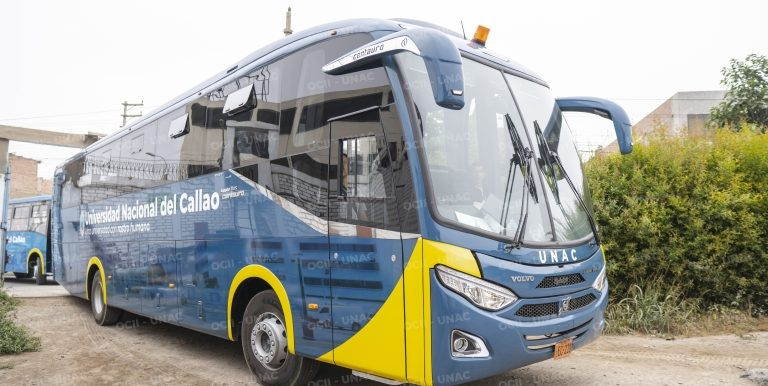
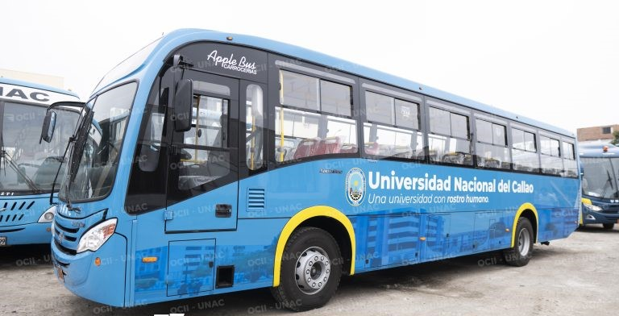
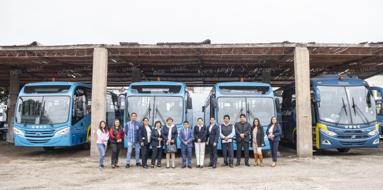

UNAC
Movilidad
Panel de Rutas
5:15 AM
ActivadoSEDE UNAC - UNAC
6:00 PM
ActivadoUNAC - SEDE UNAC
2:15 PM
InhabilitadoUNAC - INKA COLA
10:15 PM
InhabilitadoUNAC - TELEFONO
DOCUMENTACIÓN REQUERIDA
Carnet Universitario Vigente
Obligatorio para acceder al servicio de movilidad.
DNI Original
Opcional para verificación de identidad adicional.
Constancia de Matrícula
Actualizada del semestre vigente, en caso de no tener carnet universitario.



Cargando...
00:00:00
---
CALCULANDO
---
Secuencia de Paraderos
❗ DATO ADICIONAL IMPORTANTE ❗
Debido a la alta demanda, el último paradero para recoger pasajeros es CARSA VENTANILLA 😫. No se confíen 🙄.
Comuníquense con el delegado 🧐 para ver si hay espacio disponible para subir en los siguientes paraderos 😰.